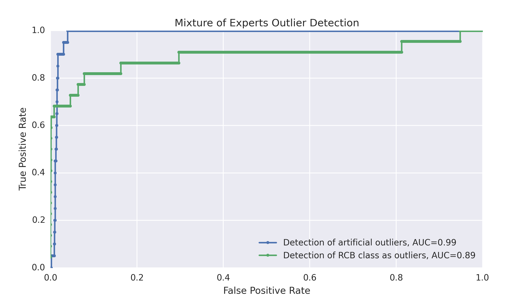

Mixture of Experts & Results
Introduction to the Mixture of Experts
With the mixture of experts approach, we assume that each outlier detection method performs best within a particular domain of the sample space. In this ensemble method, we combine the results from each method in a smart way so that the diversity of experts can make up for deficiencies in individual methods over particular domains. Therefore, the result of each expert is weighted by values generated based on the location of the point in the 57-dimensional space. The gating parameter $\eta_i$ for each expert $i$ must be trained.
The gating probability $g_i^x$ is the weight assigned to each expert $i$ for data point $\vec{x}$ $$g_i^x= \frac{exp(\vec{\eta_i}^T \vec{x})}{\sum_{j=1}^k exp(\vec{\eta_j}^T \vec{x}) },$$ where $\vec{x}$ is a 57-dimensional data vector (one data point), and $\eta_i$ is the gating parameter for each expert $i$, with a total of $k$ experts. Thus, the outlierliness score $P_x$ for a particular data point $\vec{x}$ is: $$P_x = \sum_{i=1}^k g_i(\vec{\eta_j},\vec{x}) p_i(\vec{x}),$$ where $p_i(\vec{x})$ is the outlierliness score assigned to a particular data point $\vec{x}$ by expert/model $i$.
Results
A mixture of experts model was trained on the current data set, optimizing for the detection of the artificial and the rcb group outliers.
Figure R1. ROC for the combined mixture of experts outlier detection method. While the combined model does better in detecting rcb outliers, the results here suggest that a mixture of experts approach performs better than individual experts separately.